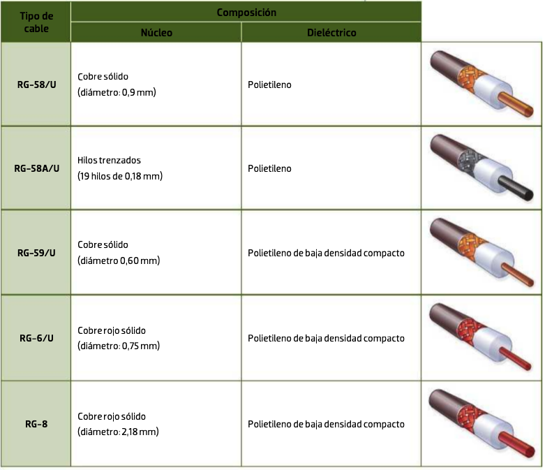

Cable coaxial¶
El cable coaxial está compuesto por dos conductores concéntricos que comparten el mismo eje. Su estructura consta de:
- Conductor central: Hilo de cobre sólido o hilos trenzados de cobre
- Dieléctrico: Capa aislante de material dieléctrico (generalmente polietileno)
- Pantalla conductora: Malla de hilos de cobre o aluminio que actúa como conductor exterior
- Cubierta exterior: Material aislante protector (habitualmente PVC)
Características del cable coaxial
Este tipo de cable es más resistente que el cable de par trenzado a las interferencias electromagnéticas y presenta menor atenuación de señal, lo que lo convierte en una opción eficiente para grandes distancias. Sin embargo, en redes locales modernas su uso se ha reducido significativamente debido a la obsolescencia de las topologías de bus.
¿Por qué esta estructura?¶
La clave del coaxial está en su geometría. El conductor central transporta la señal y la malla exterior actúa a la vez como conductor de retorno y como pantalla.
Como ambos comparten eje, el campo electromagnético queda confinado en el dieléctrico, entre el hilo central y la malla. Esto tiene dos consecuencias muy prácticas:
- El cable no irradia apenas señal hacia el exterior (no molesta a otros equipos).
- El ruido exterior no llega al conductor central, porque la malla lo intercepta y lo deriva a tierra.
Por eso el coaxial es un cable intrínsecamente apantallado: no necesita trenzado ni señal diferencial, como el par trenzado, para protegerse del ruido.
Cuanta más malla, mejor
En los cables de calidad encontrarás doble o cuádruple apantallamiento: una lámina de aluminio (foil) pegada al dieléctrico, más una o varias mallas. La lámina frena las altas frecuencias y la malla, las bajas. Es lo que diferencia un cable de antena barato de uno bueno.
La impedancia característica¶
Es el concepto más importante del apartado y el que explica la mayoría de las averías.
Todo cable coaxial tiene una impedancia característica, medida en ohmios (Ω), que depende de su geometría (diámetro del conductor, del dieléctrico y de la malla). No es una resistencia que se pueda medir con un polímetro: es la oposición que el cable ofrece a la señal que viaja por él.
Existen dos familias:
| Impedancia | Usos habituales |
|---|---|
| 50 Ω | Datos (Ethernet antiguo), radiofrecuencia, antenas Wi‑Fi, instrumentación, equipos de radio |
| 75 Ω | TV terrestre y satélite, televisión por cable, videovigilancia analógica, audio/vídeo |
Todo el sistema debe tener la misma impedancia: cable, conectores, equipos y terminadores. Si se mezclan (por ejemplo, un latiguillo de 50 Ω en una instalación de antena de 75 Ω), parte de la señal rebota al llegar al punto de desadaptación y vuelve por el cable. Estas reflexiones se suman a la señal original y la distorsionan: en TV se ven "fantasmas" o pixelado, y en una red de datos provocan errores y colisiones.
El terminador
Por esa misma razón, en las antiguas redes en bus se colocaba un terminador de 50 Ω en cada extremo del cable. No es un simple tapón: lleva dentro una resistencia que absorbe la señal al llegar al final, evitando que rebote. Sin terminadores, la red no funcionaba, aunque todos los equipos estuvieran bien conectados.
Atenuación, frecuencia y distancia¶
La atenuación del coaxial se mide en decibelios por cada 100 metros (dB/100 m) y tiene dos particularidades:
- Crece con la frecuencia: el mismo cable atenúa mucho más una señal de satélite (2 GHz) que un canal de TDT (600 MHz).
- Crece con la longitud: por eso las instalaciones largas usan cables más gruesos o amplificadores intermedios.
También conviene respetar el radio de curvatura mínimo del fabricante. Si se dobla en exceso o se aplasta con una brida, el conductor central se descentra respecto de la malla, cambia la impedancia en ese punto y aparecen reflexiones.
Ventajas y desventajas¶
Ventajas:
- Mayor resistencia a interferencias electromagnéticas
- Menor atenuación de señal (pérdida mínima)
- Eficiente para transmisiones a grandes distancias
- Mayor ancho de banda disponible
Desventajas:
- Mayor coste económico que el cable de par trenzado
- Instalación más compleja y costosa
- Aplicaciones limitadas en redes modernas
- Mayor grosor y menor flexibilidad
Matiz importante
Estas ventajas hay que entenderlas en su contexto histórico y en radiofrecuencia. En una LAN actual, un Cat. 6a de cobre da 10 Gbps a 100 m, muy por encima de lo que ofrecía cualquier Ethernet sobre coaxial. El coaxial sigue ganando en distribución de señales de radiofrecuencia (TV, satélite, antenas), no en redes de datos.
Tipos de cable coaxial¶
De toda la familia de cables coaxiales, los más extendidos en el ámbito de las telecomunicaciones son:
{kind=link}

Los cables coaxiales se designan con la nomenclatura RG (Radio Guide), heredada de las especificaciones militares estadounidenses:
| Cable | Impedancia | Uso principal | Conector habitual |
|---|---|---|---|
| RG‑58 | 50 Ω | Ethernet 10BASE2 (thinnet), radioaficionados | BNC |
| RG‑8 / RG‑213 | 50 Ω | Ethernet 10BASE5 (thicknet), radio de potencia | N |
| RG‑59 | 75 Ω | Videovigilancia analógica, vídeo compuesto | BNC |
| RG‑6 | 75 Ω | TV terrestre, satélite y cable (el más común hoy) | F |
| RG‑11 | 75 Ω | Tiradas largas de TV y distribución en edificios | F |
RG‑58 y RG‑59 se parecen mucho
Tienen un grosor similar y ambos suelen llevar conector BNC, pero uno es de 50 Ω y el otro de 75 Ω. Confundirlos es un error clásico: el sistema "funciona a medias", con pérdidas y reflexiones difíciles de localizar. Hay que mirar siempre la serigrafía impresa en la cubierta, donde figuran el tipo y la impedancia.
El coaxial en las primeras redes Ethernet¶
Aunque hoy esté obsoleto para datos, conviene conocer de dónde venimos, porque explica muchos conceptos de redes:
| Tecnología | Cable | Distancia máxima por segmento | Cómo se conectaban los equipos |
|---|---|---|---|
| 10BASE5 (thicknet) | RG‑8, amarillo y muy rígido | 500 m | Transceptor "vampiro" que perforaba el cable |
| 10BASE2 (thinnet) | RG‑58, fino y flexible | 185 m | Conector BNC en T en la tarjeta de red |
Ambas usaban topología de bus: un único cable recorría toda la oficina y los equipos se colgaban de él, con un terminador en cada extremo. Esto implicaba que:
- Todos los equipos compartían el mismo medio y el mismo ancho de banda (10 Mbps entre todos).
- Un corte del cable, una T mal conectada o un terminador ausente dejaban sin red a todo el segmento, no solo al equipo afectado.
- Localizar la avería era lento, porque había que recorrer el bus tramo a tramo.
La llegada del par trenzado y de la topología en estrella con hub o switch resolvió justamente eso: cada equipo tiene su propio cable y un fallo solo afecta a ese equipo.
Conectores para el cable coaxial¶
La gama de conectores para cable coaxial es muy amplia, ya que este tipo de cable se utiliza mucho en la industria.
- Estos conectores se llaman RF y tienen diferentes formas: rectos, en ángulo, en T, etc.
- Los conectores RF pueden ser macho o hembra. Los conectores macho tienen un capuchón en su extremo que se utiliza para enganchar con el conector hembra.
Principalmente hay tres maneras de engancharlos:
- Anclaje: es la más común. El capuchón conector del macho se engancha en las ranuras del conector hembra.
- Rosca: el conector hembra tiene un paso de roscas sobre el que se enrosca el capuchón del conector macho.
- Presión: el capuchón del conector macho se acopla sobre el conector hembra. Típico en la conexión de la antena de TV.
Además de los conectores, en las redes con topología de bus se utiliza un elemento en los extremos del bus llamado terminador. Este conector no es más que un tapón con una resistencia en su interior para amortiguar las señales cuando llegan al final del bus, e impedir rebotes que pudieran causar interferencias.
Los principales tipos de conector para cable coaxial son:
- BNC: Conectores macho y hembra disponibles - Redes Ethernet 10BASE2 (obsoleto)
- N: Conectores macho y hembra disponibles - Aplicaciones de alta frecuencia
- TNC: Conectores macho y hembra disponibles - Versión roscada del BNC
- SMA: Conectores macho y hembra disponibles - Aplicaciones de microondas
En la siguiente imagen se muestran los diferentes tipos de conectores coaxiales mencionados:

A esa lista hay que añadir dos conectores que verás a diario aunque no aparezcan en los manuales de redes:
- Conector F: roscado, de 75 Ω. Es el de las tomas de TV y satélite y el de la entrada del router de cable. En él, el propio conductor central del cable hace de pin, no lleva pin propio.
- Conector IEC (Belling‑Lee): el clásico de presión de la antena de televisión, macho y hembra, también de 75 Ω.
Tipo de anclaje de cada uno:
| Conector | Anclaje | Impedancia | Dónde lo encuentras |
|---|---|---|---|
| BNC | Bayoneta (anclaje) | 50 o 75 Ω | CCTV, instrumentación, Ethernet antiguo |
| TNC | Rosca | 50 Ω | Versión roscada del BNC, entornos con vibración |
| N | Rosca | 50 Ω | Antenas, alta frecuencia y potencia |
| SMA | Rosca pequeña | 50 Ω | Antenas Wi‑Fi, routers, módulos de radio |
| F | Rosca | 75 Ω | TV, satélite, router de cable |
| IEC | Presión | 75 Ω | Toma de antena de TV doméstica |
Montaje y averías típicas¶
Los conectores coaxiales se montan por crimpado (con crimpadora hexagonal), por compresión (los más fiables en TV y CCTV) o a rosca. El proceso es siempre el mismo: pelar la cubierta, peinar la malla hacia atrás, retirar el dieléctrico y dejar el conductor central a la medida.
El fallo número uno
Que un hilo suelto de la malla toque el conductor central. Eso provoca un cortocircuito en el que la señal desaparece por completo: la TV no ve canales, la cámara no da imagen. Se soluciona rehaciendo el conector y peinando bien la malla hacia atrás.
Otras averías frecuentes: conductor central demasiado corto (no hace contacto), cable aplastado o doblado, mezcla de impedancias, humedad en conectores de exterior y falta de puesta a tierra en la instalación de antena.
¿Dónde sigue usándose el coaxial?¶
- Televisión terrestre y satélite en edificios (instalaciones ICT).
- Internet por cable: las redes HFC de operadores usan fibra hasta el barrio y coaxial hasta la vivienda, con el estándar DOCSIS.
- Videovigilancia: cámaras analógicas y sistemas HD‑TVI/HD‑CVI/AHD, que aprovechan el RG‑59 ya instalado para dar alta definición sin recablear.
- Radiofrecuencia: latiguillos de antenas Wi‑Fi, equipos de radio, laboratorios.
Comparativa rápida¶
| Criterio | Coaxial | Par trenzado | Fibra óptica |
|---|---|---|---|
| Inmunidad a EMI | Alta | Media (depende del blindaje) | Total |
| Velocidad en LAN | Muy limitada | Hasta 10 Gbps y más | Muy alta |
| Distancia en LAN | 185–500 m (obsoleto) | 100 m | Kilómetros |
| Flexibilidad e instalación | Rígido, incómodo | Fácil | Delicada |
| Uso actual | RF, TV, CCTV | LAN | Troncales, FTTH, CPD |
Actividades¶
-
AC 207 (RA2 / CE2c, CE2d / IC1 / 3p). Elabora una tabla comparativa de los tipos de cable coaxial más habituales (al menos RG‑58, RG‑59, RG‑6 y RG‑11): impedancia, uso principal, conector típico y si sigue vigente hoy. Indica qué cable elegirías para llevar la señal de TV desde la antena de la azotea hasta un aula y por qué.
-
AC 208 (RA2 / CE2b, CE2c / IC1 / 3p). Para cada situación, indica el conector más adecuado, su tipo de anclaje (anclaje, rosca o presión) y la impedancia del sistema:
Caso Conector Anclaje Impedancia a) Toma de antena de TV del salón b) Cámara de videovigilancia analógica c) Antena externa de un router Wi‑Fi d) Entrada del router de Internet por cable -
AC 209 (RA2 / CE2a, CE2d / IC1 / 3p). Dibuja el esquema de una red 10BASE2 con cuatro ordenadores: señala el cable, las T BNC y los terminadores. Después responde:
- a) ¿Qué función cumple exactamente el terminador y qué pasa si falta uno?
- b) Si un usuario desconecta su T del bus para llevarse el equipo, ¿qué ocurre con el resto de la red? ¿Y si hiciera lo mismo en una red actual con switch?
- c) Cita dos motivos por los que esta topología fue sustituida por la estrella con par trenzado.
-
AC 209 (RA2 / CE2d, CE2e / IC1 / 3p). Diagnostica estas averías. Indica la causa más probable y cómo la solucionarías:
- a) Tras sustituir un latiguillo de antena, la TV muestra imagen pixelada y pierde canales. El latiguillo nuevo es de 50 Ω.
- b) Una cámara analógica recién instalada no da ninguna imagen. Al abrir el conector BNC se ve que la malla está sin peinar y algún hilo suelto.
- c) Una instalación de satélite funciona bien en la primera planta, pero en la cuarta la señal llega muy débil con el mismo cable.
- d) Un cliente quiere sustituir el coaxial de su videovigilancia analógica por par trenzado. ¿Qué implicaría el cambio y qué alternativa le propondrías si no quiere recablear?